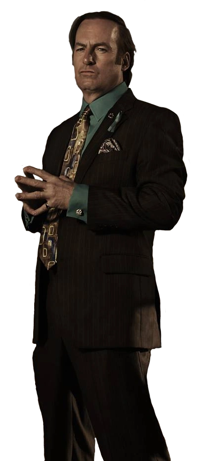

Transforms
I'm saul gooooooooooooooooood mann I coke meeaaath
10. "ONLY TWO THINGS I KNOW ABOUT ALBUQUERQUE..." Saul Goodman working at Cinnabon "Only two things I know about Albuquerque; Bugs Bunny should've taken a left turn there, and give me a hundred tries, I'll never be able to spell it." Jimmy's humor was always one of the best parts of his character, even going back to his time on Breaking Bad. RELATED: Breaking Bad Movie: 10 Questions They Will Have To Answer From The Series Oftentimes, when Jimmy puts on his Saul facade, he uses his witty sense of humor to his advantage, charming potential clients and making them laugh at the same time. The above quote is a good example of this tactic. 9. "PERFECTION IS THE ENEMY OF PERFECTLY ADEQUATE." Jimmy attempts to comfort Chuck before he gets arrested in Better Call Saul This is one of the most well-known quotes ever to come from Better Call Saul. The series focused largely on the relationship between Jimmy and his complicated older brother, Chuck. Even with Chuck's death taking place in the finale of the third season, the following season still conveyed that Chuck is still a significant part of Jimmy's story. RELATED: Better Call Saul: 5 Breaking Bad Characters We Want In The Show (& 5 We Don't) "Perfection is the enemy of perfectly adequate," is something Jimmy said to Chuck, and it's a phrase that pretty much perfectly captures the core of their dynamic. 8. "HAIL SATAN. I SUBMIT TO THE DARK SIDE." Jimmy McGill's sarcasm is truly the best sarcasm, and the above quote really captures the essence of Jimmy's sense of humor. It's rare to find a show in which the character who provides the most comedic relief, is also the main protagonist, but Better Call Saul manages to make this work. RELATED: 5 Things That Breaking Bad Still Does Better Than Better Call Saul (& 5 Things It Did Worse) When asked by Chuck if he was working on a case for Hamlin Hamlin McGill, Jimmy responded, "hail satan, I submit to the dark side." Jimmy had a very strained and complicated relationship with the firm. 7. "HE'S ACTUALLY - BELIEVE IT OR NOT - SOMEWHAT TACITURN." "Look, don't let Mr. Ehrmantraut's dancings eyes and bubbly bon vivant personality fool you. He's actually - believe it or not - somewhat taciturn." Mike is undoubtedly one of the best, most memorable characters to come out of the Breaking Bad and Better Call Saul. RELATED: Hector Salamanca's Breaking Bad Backstory (Revealed In Better Call Saul) Mike's demeanor is beyond taciturn; he is the most deadpan, nonexpressive character on the show, and that's why viewers love him so much. Due to how different Jimmy and Mike are, seeing their dynamic - which is a major part of the prequel series - never fails to be entertaining. 6. "MONEY IS THE POINT!" The above quote is another example of an argument between the McGill brothers. Their relationship is extremely captivating to watch, and since the two are polar opposites and rarely ever see eye-to-eye, it makes for a very interesting dynamic. This scene itself is also a good example of the brothers' opposing views on everything; when Chuck says to Jimmy, "money is beside the point," Jimmy's response is, "money is the point!" 5. "I LOOK LIKE A YOUNG PAUL NEWMAN DRESSED AS MATLOCK." Jimmy is portrayed as having a personality suited for pursuing a career in law, but at the same time, his moral compass was often conflicting, making many other lawyers look down on him. Jimmy took on whatever clients he could - whether he was working independently, with Kim, or with HHM. In one memorable scene, Jimmy walks by a group of fellow lawyers, who scoff at his appearance and tell him that he looks like Matlock. To this, Jimmy says, "I look like a young Paul Newman dressed as Matlock." 4. "FYI, OLD PEOPLE ADORE ME." Better Call Saul Jimmy McGill is a pretty charming guy, but not everyone appreciates his humor and camaraderie. Many of the other characters often just roll their eyes at Jimmy and the way he is, but senior citizens are the exception to this. RELATED: Is Jesse Haunted By The Ghosts Of Breaking Bad In New Movie? It's a well-known fact that was presented in both Breaking Bad and Better Call Saul, that Jimmy has a way with elderly people. He knows how to talk to them, knows how to charm them, and sometimes, knows how to get them to give him what he wants. But they love him, nevertheless. 3. "S'ALL GOOD, MAN." Bob Odenkirk Better Call Saul It's in the first season of Better Call Saul that viewers are introduced to the fact that Jimmy McGill is more than the crooked Saul Goodman they all remember. The series does such an admirable job on fleshing out the characters, and they make Jimmy's entire character all the more complex. RELATED: Where Are They Now: The Cast Of Breaking Bad The first season of Better Call Saul, also reveals that Jimmy's alias, Saul Goodman, actually just comes from him saying the phrase, "s'all good, man." 2. "YOU LOOK AT ME AND YOU SEE SLIPPIN' JIMMY." Jimmy informs Kim that he is about to change his name in Better Call Saul Bob Odenkirk's portrayal of Jimmy is one that has been praised and will probably continue to be praised for years to come. In Breaking Bad, we primarily were only shown his "Saul Side". In Better Call Saul, as the series delves into Jimmy's life pre-Walter White, it's revealed that Jimmy's crooked side is often referred to as "Slippin' Jimmy". RELATED: Lydia's Breaking Bad Backstory (As Revealed In Better Call Saul) In season 4's penultimate episode, there's an extremely heartbreaking, emotional scene between Kim and Jimmy. Disheartened, Jimmy tells her, "you look at me and you see Slippin' Jimmy." This may be one of the most melancholy scenes in the entire series. 1. "I'M GONNA BE A DAMN GOOD LAWYER, AND PEOPLE ARE GONNA KNOW ABOUT IT." Bob Odenkrik as Jimmy in Better Call Saul Season 3 Episode 10 What makes Better Call Saul such a fascinating show, is the fact that it manages to trick its audience into feeling spots of hope for the characters in enlightening moments, when in reality, we all know how it will end. The future is bleak for Jimmy, and viewers who watched Breaking Bad know this without a doubt. Soon Jimmy will transform into the crooked lawyer, Saul Goodman, but still, the series manages to make us hope for a better life for him. This quote encapsulates this enigma well, as hearing Jimmy declare that he will be a good lawyer, makes viewers desperately want to believe that. d
to Top